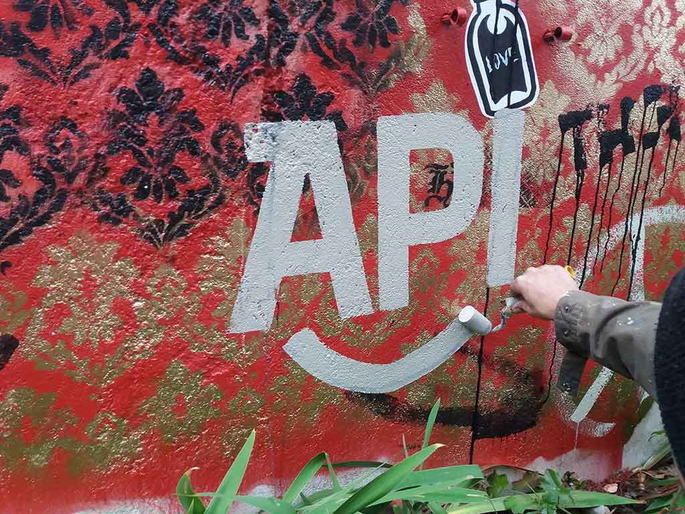

mp
pngfst
vl
2051
13 — 23.5
genève
festival des arts
technologiques et déviants
«mots futurs»
exposition collective dans
le cadre du mapping festival à l'API
du 1er mai au 6 juin 2021
Lu-Ve — de 10h à 17h
Ecomusée Voltaire de l'API
Rue du Vuache 25
Vernissage: 1er mai 2021
expo

«LINXX»
de NA
De nuit tous les soirs jusqu’à 23h.
Installation extérieure de 326 prises électriques multiples.

«L'inclusif-ve»
de Tristan Bartolini
Une présentation de la technique épicène ou son invention de 30 nouveaux caractères ajouté à notre alphabet (drapeaux dans la cour, posters et autocollants dans l’API). Tristan Bartolini est fraîchement diplômé en Communication visuelle de la HEAD Genève et a remporté le Prix Art Humanité 2020.

«XY»
des étudiants Bachelor Media & Interaction Design de l’ECAL
Une présentation de 5 oscilloscopes piratés autour du potentiel graphique et interactif, réalisés lors d’un atelier donné par Ted DAVIS (exposition des oscilloscopes dans la mezzanine et de films dans l’entrée de l’API).

«Castr@»
Begonia Cuquejo
Installation en réalité augmentée et géolocalisée à demeure. L'installation est une trace de la performance Castr@. Une installation du récit de 1937, année de l’exécution de l'arrière-grand-père de l'artiste.
Concrètement, elle est formée par l'affiche de 1937. En Réalité Augmentée, le témoignage. Les mots du passé qui nous ouvrent la porte sur un futur différent. "Ce que je transmets ce n'est pas de mon mérite à moi, mais de celui de tant et tant d'autres femmes..." Lettres typographiques en 3D.
À l’extérieur de l’écomusée Voltaire de l’API.

«La Plus Belle chose qui soit ou le Printemps»
des Ateliers FFF
Vernissage: 8 mai à 18h
Une création mécanique in situ, interactive et dérisoire.
performances
CASTR@
Begonia Cuquejo, 20 min
1er mai à 18h30
La performance s'articule autour d'une «minute de silence», un acte commémoratif pour rendre hommage à tous les corps traversés par la violence du silence.

« dSimon »
de Tammara Leites et Simon Senn
21—22 mai 2021
Le public participe à l’élaboration d’un spectacle qui aura lieu en novembre 2021 au Théâtre Vidy-Lausanne. Lors de 3 séances en huis clos en visioconférence (Zoom certainement), le public rencontre les artistes ainsi qu’une intelligence artificielle nommée dSimon et interagit avec eux. L’intelligence artificielle a reçu tout ce que Simon SENN a écrit dans sa vie afin de pouvoir produire à son tour des écrits en son nom. Elle se révèle parfois hors de contrôle, voire dangereuse.

« Tictacdingdong »
Le 23 mai 2021 à 21h
Chorégraphie de Charlène Moreau, compagnie LES FOUINES
Chanteuse Mona Lysa Mona Coca
Une performance inédite avec des diapositives picturales typographiées par l’API.
ateliers

« Lumières sur mes roues »
des Ateliers FFF & Claire Eliot
Les samedis 8 et 15 mai 2021
Customisation de vélos et de gilets avec des LEDs.